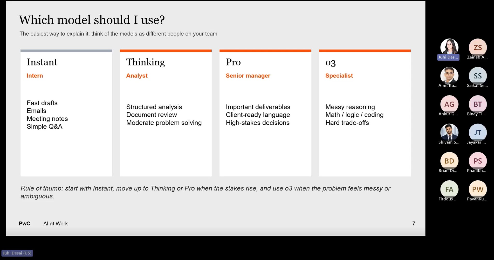
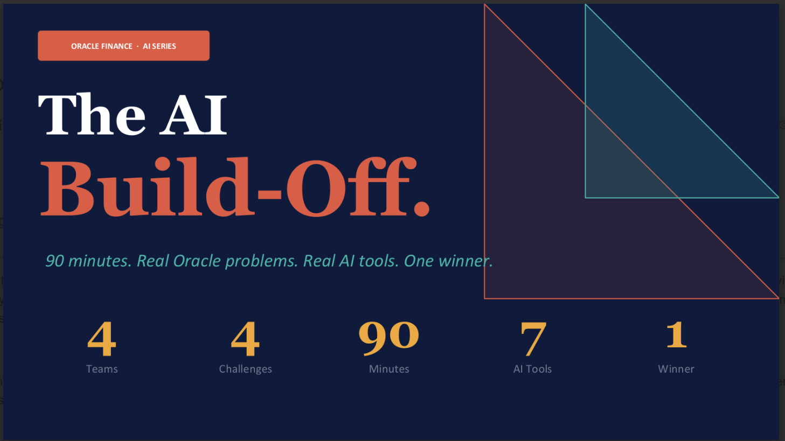
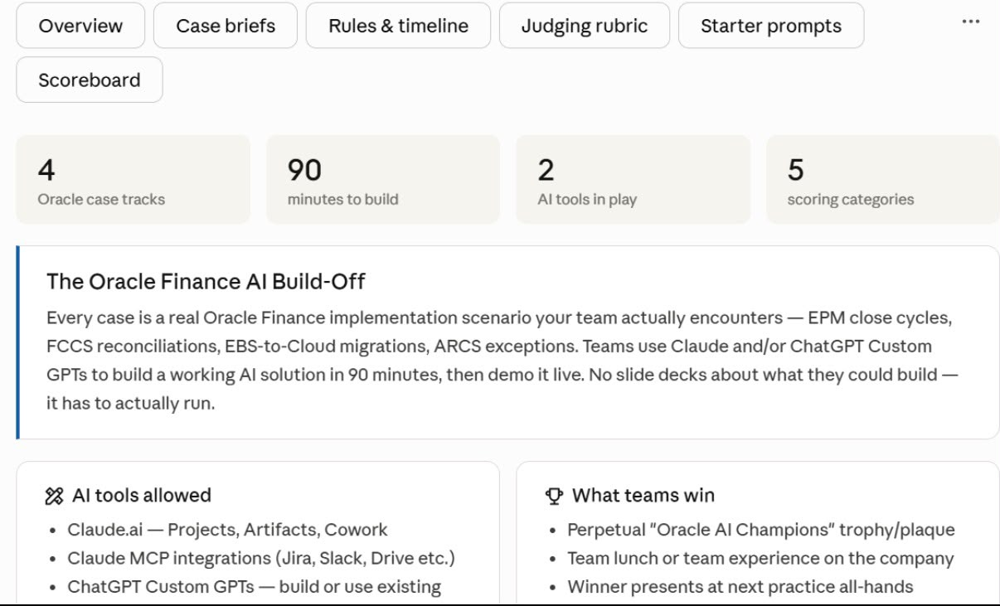
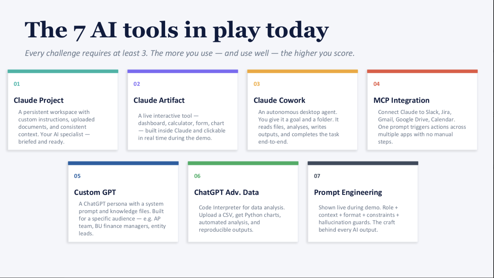
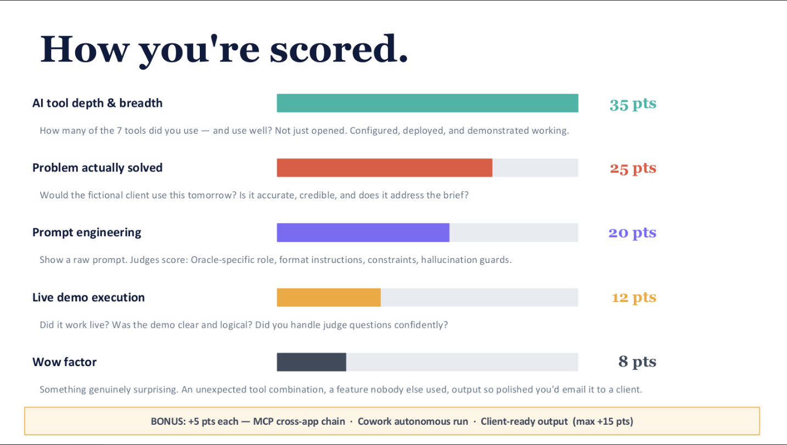

Teaching & Adoption
AI adoption program · PwC
Problem
We’d invested heavily in AI, but almost no one at the firm was using it. People didn’t know the tools existed, or didn’t know how to use them.
Solution
Eight hands-on workshop sessions across Claude and ChatGPT.
Another problem
Knowing a tool exists isn’t the same as wanting to learn it.
Solution
A case competition with real prizes — the AI Build-Off.
Eight sessions moved from AI fundamentals to hands-on practice with 7 tools, choosing the right model for the job along the way.


The Build-Off

Case format & rules

7 tools in play

How it was scored
Intro to the Case Comp. 4 teams, 4 real Oracle Finance challenges, one 90-minute window to build.
The Build-Off. Teams had to demo a working AI solution live — not present slides about what they could build.
The Toolkit. Every challenge required using at least 3 of the 7 AI tools taught in the sessions.
Metrics for Success. Scored on tool depth, whether the problem was actually solved, prompt engineering, live demo execution, and wow factor — in that order of weight.
One project alone reduced 400+ hours of manual effort — not by building anything new, but by putting AI tools that already existed to work.
PwC’s [A]mplify [I]mpact AI Award
Selected from 100+ nominations, the firm’s highest cash-value recognition award.
[A]mplify [I]mpact AI Award
Selected from 100+ nominations · highest cash-value recognition award